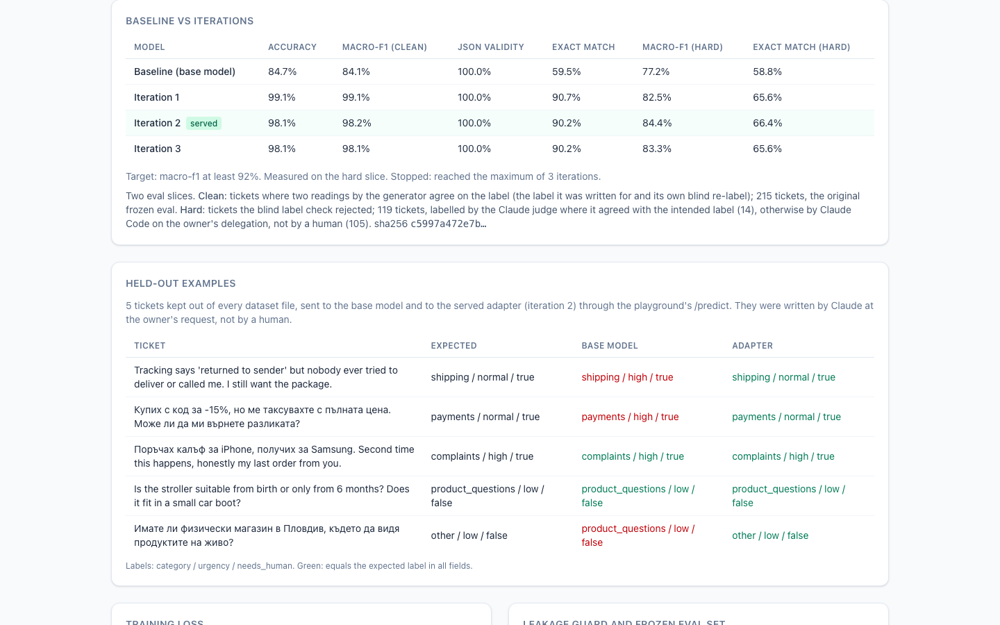

Describe a task, give a few examples, get a small fine-tuned model that does that one job on your own server.
Чирак: apprentice. A large model teaches a small one a single craft.
github.com/escapeboy/chirak · MIT
The output is a LoRA adapter for Qwen3.5-4B, a public report built from stored results, and a playground that compares the adapter with the base model side by side.
The eval set is generated and frozen with a sha256 before any training data exists. A reply that is not exactly the JSON object counts as wrong.
Train data is written by a different prompt that cannot see eval. Near-copies (bge-m3 cosine ≥ 0.92 or a shared 8-gram) are dropped and counted.
Claude reads the confusion matrix and failures and asks for the next slices in strict JSON. Guidance that quotes eval text is discarded.
Target met, 3 iterations, under 1 point of gain, or leakage over 30%. In code, not left to the LLM. It also says "not worth fine-tuning".
| macro-F1 (category) | Clean, 215 | Hard, 119 |
|---|---|---|
| Base 4B, no fine-tune | 0.84 | 0.77 |
| + LoRA, iteration 1 | 0.99 | 0.83 |
| + LoRA, iteration 2 (served) | 0.98 | 0.84 |
| + LoRA, iteration 3 | 0.98 | 0.83 |
Clean: tickets the 27B generator labels the same way twice, the clear cases. Hard: tickets that check rejected, labelled by a Claude judge and reviewed by Claude Code on the owner's delegation, not by a human. Target 0.92 on the hard slice was not met; the loop stopped at 3 iterations. Hard slice, all 3 fields right: 0.59 → 0.66. Re-scored with make eval: iteration 2 hard 0.8441, same as stored.

| Step | Stack | Demo run on MI350X |
|---|---|---|
| Data generation, Qwen3.8-27B | vLLM 0.31 on ROCm 7.2 | 1000 train items from 3923 candidates, ~6 min |
| Leakage guard, bge-m3 | PyTorch ROCm | same GPU |
| LoRA training, Qwen3.5-4B bf16 | torch 2.14.1+rocm7.2, peft, trl | 1000 examples, 2 epochs, 130 s, 12 GB |
| Eval and serving | vLLM, runtime LoRA hot-load | 215 tickets per eval |
Iteration 1 took about 17 minutes of GPU time, ≈ $1.60 at $5.49/h; the hard slice and two more iterations about 2.3 h more. The spike passed on MI300X (192 GB); on 13 Oct RunPod had no MI300X left, so the demo ran on an MI350X (gfx950, 288 GB) after re-running the training and serving checks there. No QLoRA, no bitsandbytes.
Ticket triage, order-intent detection, review moderation in their own languages. Pay per run: GPU time plus a margin. A run like the demo uses about $1.60 of GPU.
Banks, health and public bodies that cannot send texts to an external API. Self-hosted licence: the factory and the adapters run inside their network.
Integrators who build support tooling for many small merchants and need a repeatable way to produce and prove a small model per client.
This slide is a plan, not traction: there are no customers yet.
Livewire 3 UI and Tailwind v4, MariaDB, Horizon queues. Run state machine, stop rules, Claude failure analyst, public read-only reports that keep working when the GPU is off.
Async jobs: /generate, /train, /evaluate, /serve, /predict. Bound to localhost; reached only through an SSH tunnel with a bearer token. Artifacts under /data/runs/<run>/.
Open source under MIT. The worker API is a written contract, so the GPU side can move to any ROCm host. Tests run without a GPU: pytest with a fake vLLM, PHPUnit with a fake worker.